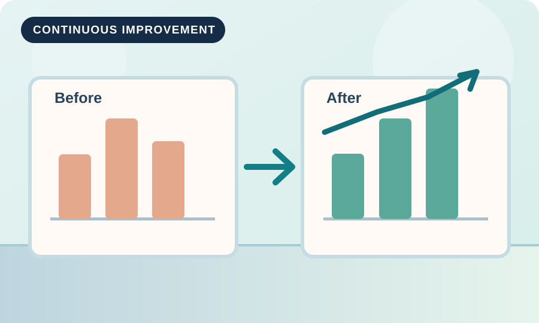

Visual locations
Use consistent location names and labels to make put-away and picking easier.
Small changes, better outcomes
Strong warehouse operations improve through observation, simple experiments, and standards that teams can follow.
A practical cycle
Improvement begins by understanding why a problem happens. It continues by checking whether a proposed change really helps.

Ideas to try
Use consistent location names and labels to make put-away and picking easier.
Confirm product identity and quantity when ownership moves between process steps.
Discuss a small set of recurring issues and assign owners for corrective actions.
Measurement guide
Useful metrics connect daily work with service, quality, and productivity.
| Measure | Meaning | Why it helps |
|---|---|---|
| Inventory accuracy | Match between physical and recorded stock | Builds trust in stock records |
| Order accuracy | Orders shipped with correct items and quantities | Helps prevent customer complaints |
| On-time dispatch | Shipments leaving by the agreed deadline | Shows delivery reliability |
| Picking productivity | Completed picks per working hour | Highlights changes in process efficiency |
These are example measures for learning, not reported data from a real company.